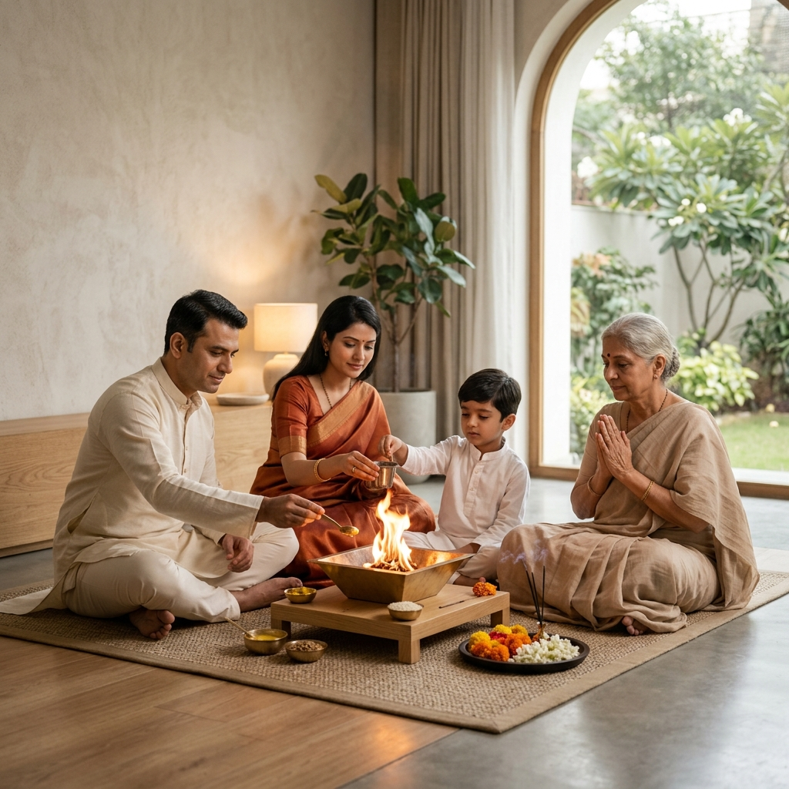

A Legacy of Unity and Service
Our History
The Arya Pratinidhi Sabha America (APSA) was established to connect and empower Arya Samaj members across the continent.


Uniting North America through the eternal values of Vedic Dharma.
The mission of Arya Pratinidhi Sabha America is to unite and empower Arya Samajs and Vedic organizations across North America in preserving, living, and propagating the eternal values of Vedic Dharma. Rooted in the teachings of Maharishi Dayanand Saraswati and guided by the Ten Principles of Arya Samaj, we strive to dispel ignorance, foster social equality, promote education, and work continuously for the physical, spiritual, and social well-being of all humanity.
To build a thriving, dynamic legacy across North America that empowers individuals and families to live Vedic principles daily, bridges cultural heritage with modern life, and leads global efforts in service, education, and social reform.
A Legacy of Unity and Service
The Arya Pratinidhi Sabha America (APSA) was established to connect and empower Arya Samaj members across the continent.
The Arya Pratinidhi Sabha America (APSA) traces its roots to 1988, when Girish Khosla began connecting with Arya Samaj members across North America through correspondence. His vision was to unite a scattered diaspora into a cohesive community dedicated to the principles of the Vedas.
His efforts, supported by visionary leaders like Lala Ram Chand Mahajan, Pt Ramlal, and Amar Erry, culminated in the first Arya Mahasammelan on April 13, 1991, in Detroit, Michigan. This landmark event gathered Aryas under one roof, officially establishing APSA as an umbrella organization dedicated to promoting and preserving Vedic values across the continent.
Since its inception, APSA has grown into a cohesive family that holds annual Mahasammelans across North America and remains deeply committed to charitable service. The organization has provided vital support during global crises, including earthquakes in Gujarat, Haiti, and Nepal, the South India tsunami, hurricanes Irma and Harvey, and massive COVID-19 relief efforts in India.
Today, guided by the legacy of Maharshi Dayanand Saraswati and sustained by a new generation of leadership, APSA continues its mission. We strive to unite forces, uplift society, and pursue the universal vision of making the world noble.
The Principles of Arya Samaj
The foundation of the Arya Samaj is built upon ten core principles that emphasize truth, logic, and universal welfare:
Governance
APSA is guided by a dedicated team of leaders committed to the propagation of Vedic values, community service, and the continued growth of the Arya Samaj across North America.
We are a continental community. Find a local Arya Samaj chapter near you to connect with in-person events and community service projects.
Find a Samaj Near YouAPSA operates with full transparency and democratic governance. View our organizational bylaws and constitution.
View Constitution